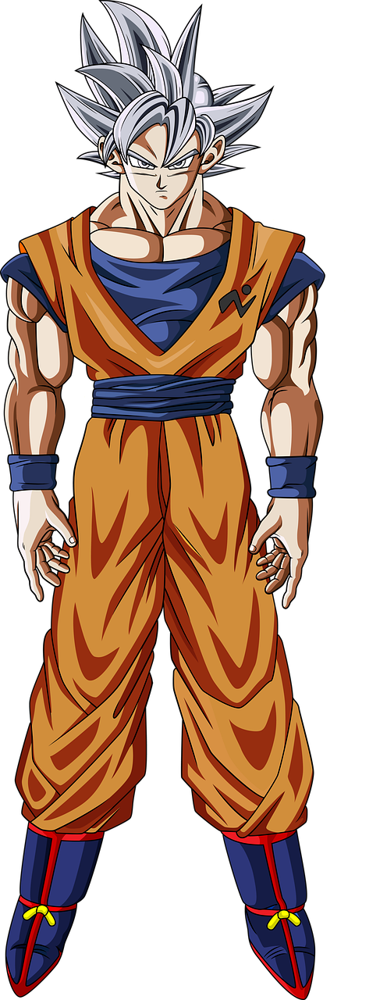
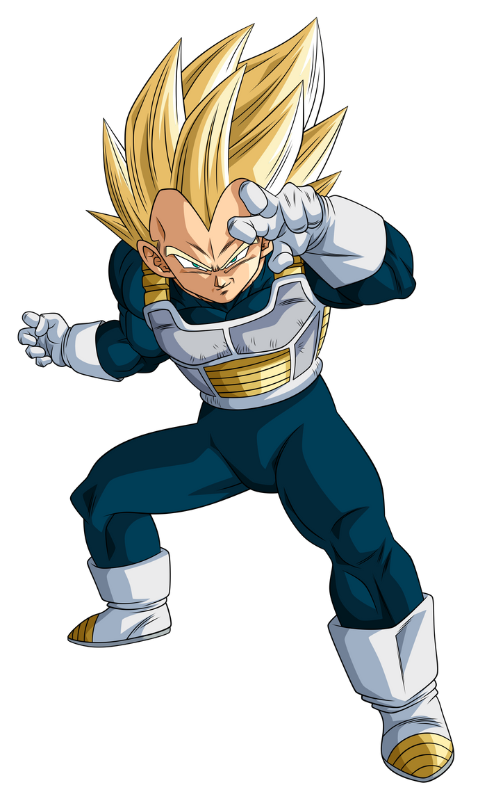
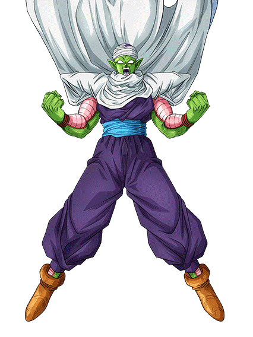
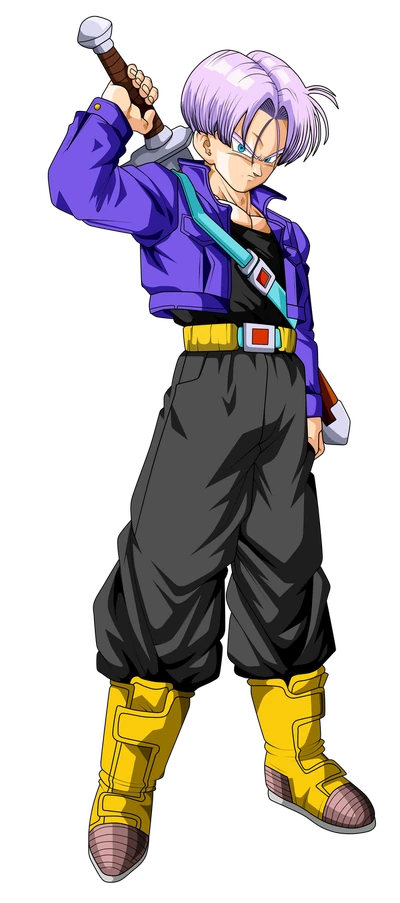
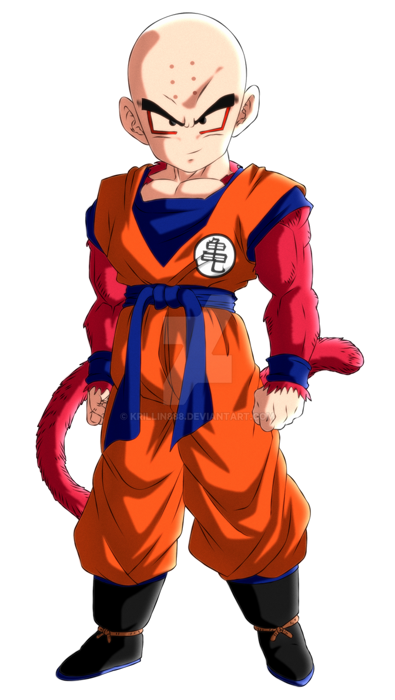

Goku
El protagonista principal de Dragon Ball. Habilidades: Kamehameha, Super Saiyan.
Descubre los secretos y aventuras de este universo
Dragon Ball es una serie de manga escrita e ilustrada por Akira Toriyama. La historia sigue las aventuras de Goku, un guerrero Saiyajin que fue enviado a la Tierra cuando era un bebé. A lo largo de su vida, Goku se enfrenta a numerosos enemigos y se hace más fuerte con cada batalla.
La serie comenzó en 1984 y rápidamente se convirtió en un fenómeno mundial. El manga fue adaptado a una serie de anime que también tuvo un gran éxito. Dragon Ball ha influido en muchas otras series y ha dejado una marca indeleble en la cultura popular.
A lo largo de los años, Dragon Ball ha tenido varias secuelas y spin-offs, incluyendo Dragon Ball Z, Dragon Ball GT y Dragon Ball Super. Cada una de estas series ha expandido el universo de Dragon Ball y ha introducido nuevos personajes y transformaciones.

El protagonista principal de Dragon Ball. Habilidades: Kamehameha, Super Saiyan.

El príncipe de los Saiyajin. Habilidades: Galick Gun, Super Saiyan.

Un guerrero Namekiano y mentor de Gohan. Habilidades: Special Beam Cannon, regeneración.

Hijo de Goku, un guerrero con gran potencial. Habilidades: Masenko, Super Saiyan.

Hijo de Vegeta y Bulma, viajero del tiempo. Habilidades: Burning Attack, Super Saiyan.

El mejor amigo de Goku y un hábil luchador. Habilidades: Destructo Disc, Kamehameha.
Un espacio para que los artistas envíen sus ilustraciones, cómics cortos o fanfics inspirados en Dragon Ball. Se pueden realizar concursos mensuales para destacar el mejor arte.
| Transformación | Requisitos | Poder | Apariencia |
|---|---|---|---|
| Super Saiyan | Nivel de poder alto y una intensa emoción | Multiplica el poder base por 50 | Cabello dorado y ojos verdes |
| Super Saiyan 2 | Superar los límites del Super Saiyan | Multiplica el poder base por 100 | Aparición de rayos alrededor del cuerpo |
| Super Saiyan 3 | Entrenamiento intensivo y control de energía | Multiplica el poder base por 400 | Cabello largo y sin cejas |
| Super Saiyan God | Ritual con cinco Saiyajins de corazón puro | Poder divino inmenso | Aura roja |
| Super Saiyan Blue | Control del poder de Super Saiyan God y Super Saiyan | Poder divino combinado con Super Saiyan | Cabello azul |
| Ultra Instinct | Entrenamiento extremo y control mental | Reacciones instintivas en combate | Velocidad y poder sin precedentes |
| Transformación | Requisitos | Poder | Apariencia |
|---|---|---|---|
| Golden Freezer | Entrenamiento intensivo | Poder similar al de un Super Saiyan Blue | Apariencia dorada |
| Majin Buu | Absorción de otros seres | Varias formas con diferentes niveles de poder | Varía según la forma |
| Cell Perfecto | Absorción de los androides 17 y 18 | Poder inmenso y habilidades regenerativas | Apariencia perfecta |
Reseñas y análisis de episodios específicos del anime, discutiendo su impacto en la trama general y en el desarrollo de los personajes.
| Número de Episodio | Título | Descripción | Valoración |
|---|---|---|---|
| 1 | El secreto de la esfera del dragón | Goku conoce a Bulma y comienzan su búsqueda de las esferas del dragón. | |
| 2 | La emperatriz del mal | Goku y Bulma se encuentran con el Maestro Roshi y Oolong. | |
| 3 | La nube voladora de Kame-Sen'nin | Goku recibe la nube voladora del Maestro Roshi. | |
| 4 | Oolong el secuestrador | Goku y Bulma se enfrentan a Oolong, quien ha estado secuestrando niñas. | |
| 5 | Yamcha, el guerrero del desierto | Goku y Bulma se encuentran con Yamcha y Puar en el desierto. | |
| 6 | El despertar del gran pez | Goku y Bulma se encuentran con el pez gigante mientras buscan las esferas del dragón. | |
| 7 | El monte Frypan | Goku y Bulma llegan al monte Frypan y conocen a Chi-Chi y su padre, el Rey Ox. | |
| 8 | La Kamehameha de Kame-Sen'nin | El Maestro Roshi demuestra su poder con una Kamehameha para apagar el fuego del monte Frypan. | |
| 9 | El conejo monstruo | Goku y Bulma se enfrentan a la pandilla del conejo monstruo. | |
| 10 | Las esferas del dragón se reúnen | Goku y sus amigos reúnen las siete esferas del dragón y convocan a Shenlong. |
Goku regresa a la Tierra después de entrenar con el Maestro Roshi y se enfrenta a nuevos desafíos.
En este episodio, Goku regresa a la Tierra después de un intenso entrenamiento con el Maestro Roshi. Su regreso marca un punto crucial en la serie, ya que demuestra el crecimiento y desarrollo del personaje principal. Goku se enfrenta a nuevos desafíos que ponen a prueba sus habilidades y determinación.
El episodio destaca por su excelente animación y secuencias de combate bien coreografiadas. La narrativa se centra en la evolución de Goku como guerrero y su compromiso con la protección de la Tierra. Además, se introducen nuevos personajes que jugarán roles importantes en futuros arcos argumentales.
La recepción del episodio fue muy positiva entre los fanáticos y críticos, quienes elogiaron la profundidad del desarrollo del personaje y la calidad de la animación. Este episodio es considerado uno de los momentos clave en la serie, estableciendo el tono para los eventos que seguirán.
Valoración:
No hay votos aún.
"Dragon Ball ha sido una parte importante de mi infancia. ¡Me encanta este fanzine!"
"Este sitio es increíble. Me encanta leer sobre los personajes y sus transformaciones."
"Las curiosidades y datos interesantes son mi sección favorita. ¡Muy bien hecho!"